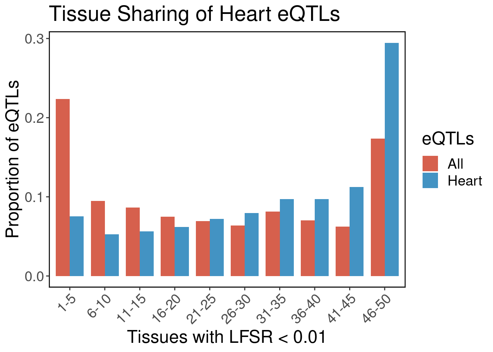
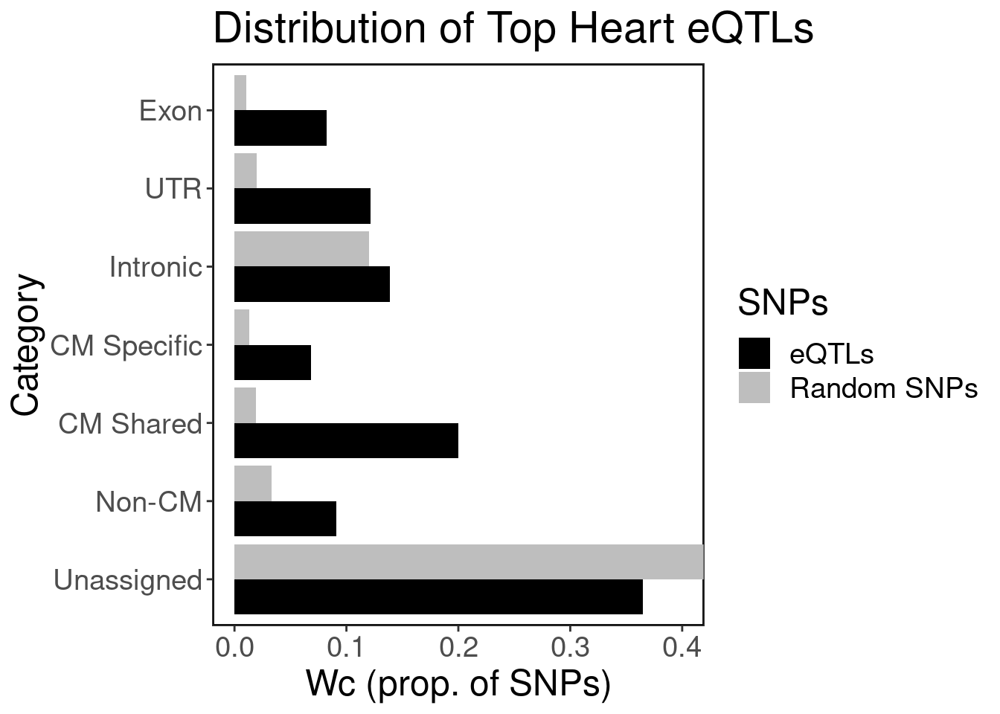
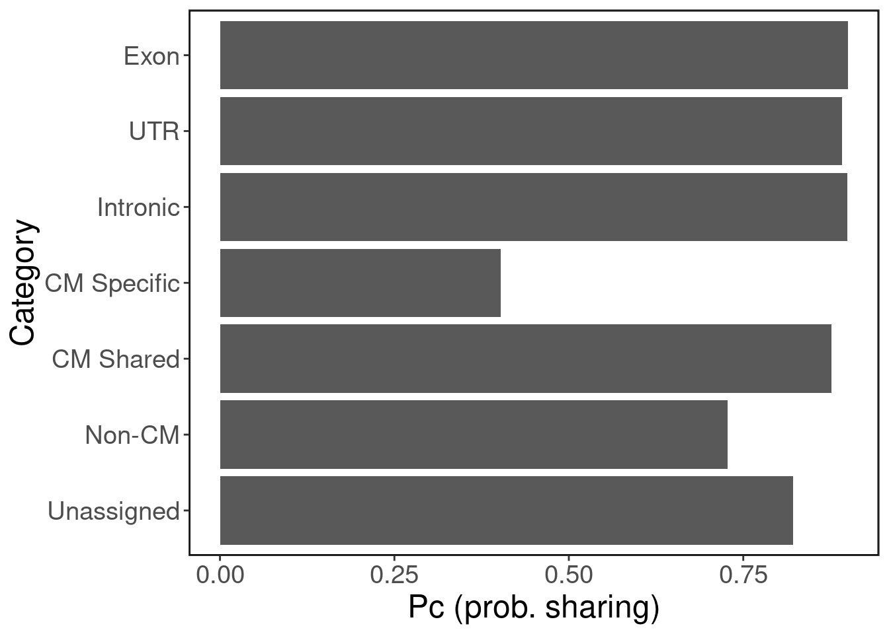
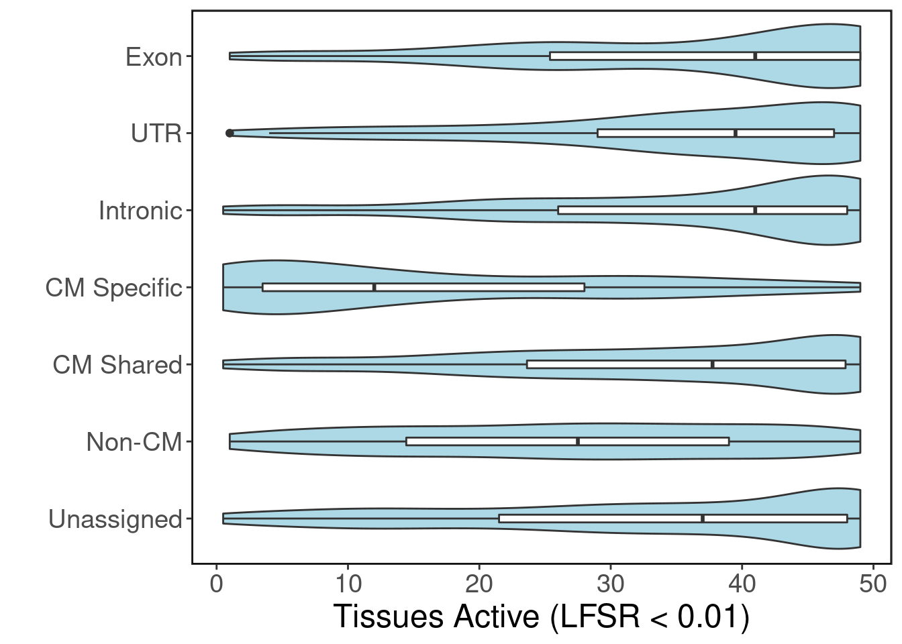
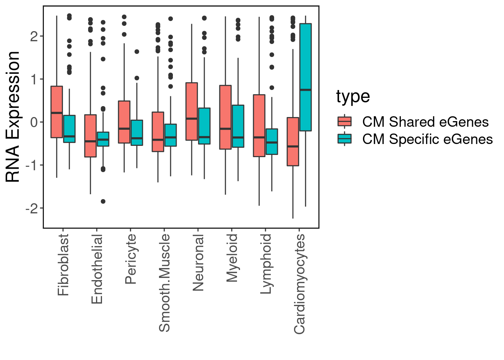
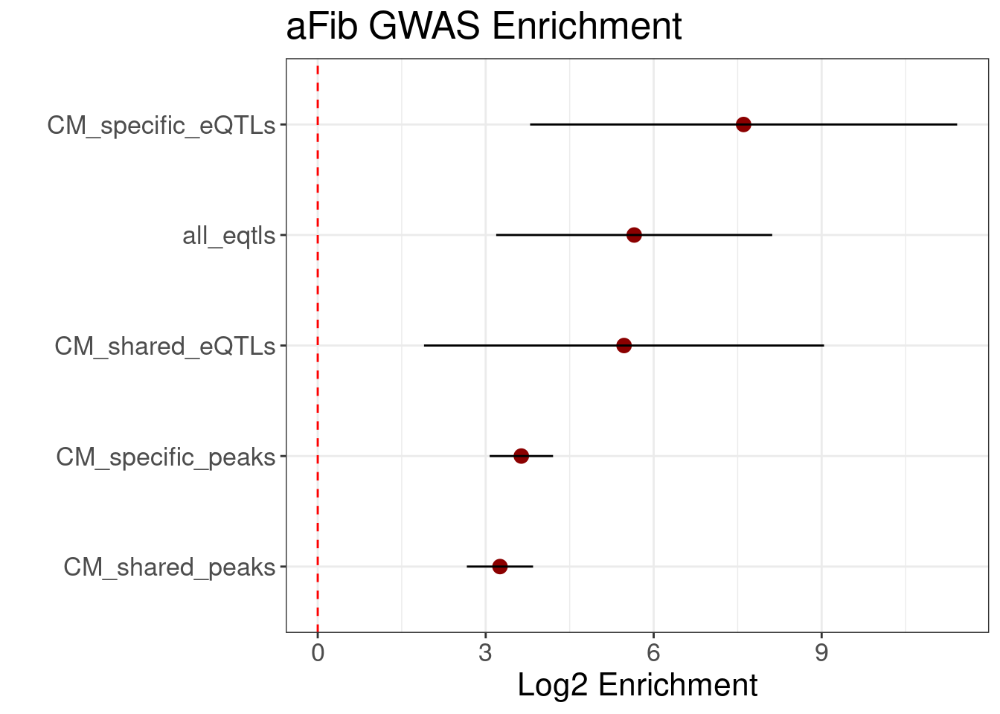

Heart eQTLs
Exploration: GTEx enrichment
GTEx has eQTL data for n = 495 individuals for heart tissue (left ventricle.) We hypothesize that the cardiomyocyte (CM) regulatory elements are enriched with heart eQTLs. We use Torus to perform this enrichment analysis. We plot the log2 enrichment result below.
source('../R/analysis_utils.R')
enrich.df <- read.delim('../eQTL_enrich/results/torus_celltypes_combined.enrichment', header=F, sep="")
ggplot(enrich.df, aes(x=V2, y=V1)) + geom_point() + geom_errorbar(aes(xmin=V3, xmax=V4), colour="black", width=.1) + ggClean() +
xlab('log2 Enrichment') + ylab('Cell Type') + geom_vline(xintercept = 0, col='red', linetype = "longdash") + ggtitle('Enrichment of ArchR DA Peaks')
Heart eQTL Finemapping
Here we focus on eQTLs that are finemapped with a posterior probability of association > 0.8. There are approximately 2,300 such SNPs.
finemap.res <- suppressMessages(readr::read_tsv('../eQTL_enrich/gtex_finemapping/GTEx_v8_finemapping_DAPG/Heart_LV_Finemapping_CS95.txt', col_names = F))
colnames(finemap.res) <- c("tissue","gene","cluster_id","cluster_pip","variant_id","variant_pip")high_pip_eqtls <- unique(finemap.res$variant_id[finemap.res$variant_pip>0.8])
eqtl.gr <- snpIDtoGR(high_pip_eqtls)
eqtl.gr$SNP <- high_pip_eqtlsrand.snps <- readLines('../matched_SNPs/eQTL_top_pip_hg19_5batches/snpsnap_match_hg38.txt')
rand.gr <- StringToGR(rand.snps)
rand.gr <- rand.gr[seqnames(rand.gr) %in% paste0("chr",1:22),]
seqlevels(rand.gr) <- paste0("chr",1:22)
rand.gr$SNP <- paste0(seqnames(rand.gr),'_',start(rand.gr))Get tissue activity of each eQTL from https://zenodo.org/record/3727189 (GTEx v8 paper)
eqtl.lfsr <- suppressMessages(vroom::vroom('../eQTL_enrich/broadinstitute-gtex-v8-a014b43/data/Fig6C_all_top.z_lfsr.sig.pruned.txt.gz'))Keep SNPs with PIP > 0.8 AND they have LFSR data.
same.snps <- intersect(eqtl.gr$SNP, eqtl.lfsr$variant)
heart.eqtl.lfsr <- eqtl.lfsr[eqtl.lfsr$variant %in% same.snps,]
eqtl.gr <- eqtl.gr[eqtl.gr$SNP %in% same.snps]Find the mean number of tissues per eQTL.
# all eqtls
tissues.active <- rowSums(eqtl.lfsr[,3:ncol(eqtl.lfsr)] < 0.01, na.rm = T)
all.eqtl.ntissues <- data.frame(eqtl=eqtl.lfsr$variant, ntissues=tissues.active) %>% group_by(eqtl) %>% summarise(mean_tissues = mean(ntissues))## `summarise()` ungrouping output (override with `.groups` argument)all.eqtl.ntissues <- all.eqtl.ntissues[all.eqtl.ntissues$mean_tissues > 0,]
# heart eqtls
tissues.active <- rowSums(heart.eqtl.lfsr[,3:ncol(heart.eqtl.lfsr)] < 0.01, na.rm = T)
heart.eqtl.ntissues <- data.frame(eqtl=heart.eqtl.lfsr$variant, ntissues=tissues.active) %>% group_by(eqtl) %>% summarise(mean_tissues = mean(ntissues))## `summarise()` ungrouping output (override with `.groups` argument)heart.eqtl.ntissues <- heart.eqtl.ntissues[heart.eqtl.ntissues$mean_tissues > 0,]Tissue Sharing of eQTLs
Below we plot the frequency of tissues active in causal heart eQTLs. Typically eQTLs have a bimodal distribution with peaks at 1-5 tissues and 45-50 tissues. We see that for heart eQTLs, they are generally shared across tissues.
betterHist <- function(X){
bks <- seq(0, 50, 5)
labs <- sapply(1:(length(bks)-1), function(x){paste0(bks[x]+1,'-',bks[x+1])})
bin.count <- table(cut(X$mean_tissues, breaks = bks, labels = labs))
bin.count <- bin.count/sum(bin.count)
bin.count.df <- data.frame(count=as.numeric(bin.count), breaks=factor(names(bin.count), levels = labs))
}
all.eqtl.bin <- betterHist(all.eqtl.ntissues)
heart.eqtl.bin <- betterHist(heart.eqtl.ntissues)
result <- rbind(all.eqtl.bin, heart.eqtl.bin)
result$eQTLs <- c(rep(c("All","Heart"), each=nrow(all.eqtl.bin)))ggplot(result, aes(x=breaks, y=count, fill=eQTLs)) + geom_bar(stat="identity", position = "dodge", width=0.8) + ggClean() + xlab('Tissues with LFSR < 0.01') + ylab('Proportion of eQTLs') + ggtitle('Tissue Sharing of Heart eQTLs') + theme(axis.text.x = element_text(angle = 45, vjust = 1, hjust=1)) + scale_fill_manual(values = c("#D6604D","#4393C3"))
Add tissue activity to our eQTL genomic ranges object
eqtl.gr$ntissues.active <- heart.eqtl.ntissues$mean_tissues[match(eqtl.gr$SNP, heart.eqtl.ntissues$eqtl)]
#eqtl.gr.low <- eqtl.gr[which(eqtl.gr$ntissues.active<=10),]
#eqtl.gr.high <- eqtl.gr[which(eqtl.gr$ntissues.active>=30),]Distribution of heart eQTLs
Overlap generic genomic annotations with top eQTLs
disjoint.annots <- readRDS('../eQTL_enrich/annotations/hg38_disjoint_annotations.gr.rds')
exon.annots <- disjoint.annots[disjoint.annots$type == "exon",]
utr.annots <- disjoint.annots[disjoint.annots$type == "UTR",]
intron.annots <- disjoint.annots[disjoint.annots$type == "intron",]satac <- ArchR::loadArchRProject(path = '../ArchR/ArchR_heart/', showLogo = F)## Successfully loaded ArchRProject!annots <- as.list(ArchR::geneAnnoHg38)
#annots$promoters <- extendGR(resize(annots$genes, 1, "start"), upstream = 2000, downstream = 100)
#annots$exons <- removeOverlaps(X = annots$exons, to.remove = annots$promoters)Split ventrical cardiomyocyte peaks into cell-type specific and into shared.
union.set <- readRDS('../ArchR/ArchR_heart/PeakCalls/UnionSet.gr.rds')
union.exons <- union.set[union.set$peakType == "Exonic", ]
ventCalls <- readRDS('../ArchR/ArchR_heart/PeakCalls/Vent..CM-reproduciblePeaks.gr.rds')
markers <- readRDS('../ArchR/ArchR_heart/PeakCalls/DA_MARKERS_FDRP_1_log2FC_1.rds')
vent.specific <- markers$`Vent. CM`
# remove Exonic peaks (because we have exon and UTR annotation)
union.set <- removeOverlaps(X = union.set, to.remove = union.exons)
ventCalls <- removeOverlaps(X = ventCalls, to.remove = union.exons)
vent.specific <- removeOverlaps(X = vent.specific, to.remove = union.exons)
vent.shared <- removeOverlaps(X = ventCalls, to.remove = vent.specific)
non.cm.peaks <- removeOverlaps(X = union.set, to.remove = ventCalls)
non.cm.peaks <- removeOverlaps(X = non.cm.peaks, to.remove = vent.specific)
intron.nonpeak <- removeOverlaps(intron.annots, to.remove = union.set)
intron.nonpeak <- removeOverlaps(intron.nonpeak, to.remove = vent.specific)
intron.nonpeak <- removeOverlaps(intron.nonpeak, to.remove = vent.shared)Overlap eQTLs with exons, introns, etc.
peaks.gr.list <- list("CM Specific" = vent.specific,
"CM Shared" = vent.shared,
"Non-CM" = non.cm.peaks,
"Intronic" = intron.nonpeak,
"Exon" = exon.annots,
"UTR" = utr.annots)
peaks.eqtls <- join_overlap_list(gr.list = peaks.gr.list, X = eqtl.gr)
peaks.random <- join_overlap_list(gr.list = peaks.gr.list, X = rand.gr)snpsIn <- unique(
unlist(
sapply(peaks.eqtls, function(x){x$SNP})
)
)
peaks.eqtls$Unassigned <- eqtl.gr[!(eqtl.gr$SNP %in% snpsIn),]
snpsIn <- unique(
unlist(
sapply(peaks.random, function(x){x$SNP})
)
)
peaks.random$Unassigned <- rand.gr[!(rand.gr$SNP %in% snpsIn),]peak.dist.df <- as.data.frame(sapply(peaks.eqtls, FUN = function(x){length(x)/length(eqtl.gr)}))
colnames(peak.dist.df) <- c("freq")
peak.dist.df$category <- rownames(peak.dist.df)
random.dist.df <- as.data.frame(sapply(peaks.random, FUN = function(x){length(x)/length(rand.gr)}))
colnames(random.dist.df) <- c("freq")
random.dist.df$category <- rownames(random.dist.df)peak.set.dist.df <- Reduce(rbind, list(random.dist.df, peak.dist.df))
peak.set.dist.df$SNPs <- c(rep("Random SNPs", nrow(random.dist.df)),
rep("eQTLs", nrow(peak.dist.df)))plot.levels <- c("Exon","UTR","Intronic","CM Specific","CM Shared", "Non-CM", "Unassigned")
peak.set.dist.df$category <- factor(peak.set.dist.df$category,
levels = rev(plot.levels))
#png('wc_distribution_1.png', width=1500, height=800, res=150)
ggplot(peak.set.dist.df, aes(y=category, x=freq, fill=SNPs)) +
geom_bar(stat="identity", position="dodge") + ggClean() + xlab("Wc (prop. of SNPs)") + ylab("Category") + ggtitle("Distribution of Top Heart eQTLs") + scale_fill_manual(values = c("black","gray")) + coord_cartesian(xlim=c(0, 0.4))
#dev.off()Tissue sharing patterns in scATAC-seq peak sets
peaks.tissue.sharing <- sapply(peaks.eqtls, function(x){x$ntissues.active})
peaks.tissue.sharing$`Union Set` <- NULL
peaks.tissue.sharing <- setNames(unlist(peaks.tissue.sharing, use.names=F),rep(names(peaks.tissue.sharing), lengths(peaks.tissue.sharing)))
peaks.tissue.sharing.df <- data.frame(category=names(peaks.tissue.sharing), ntissues=peaks.tissue.sharing)
peaks.tissue.sharing.df$category <- factor(peaks.tissue.sharing.df$category, levels=rev(plot.levels))
peaks.tissue.sharing.df <- peaks.tissue.sharing.df[!is.na(peaks.tissue.sharing.df$ntissues),]pc_shared <- peaks.tissue.sharing.df %>% group_by(category) %>% summarise(p_shared = mean(ntissues > 15, na.rm = T))## `summarise()` ungrouping output (override with `.groups` argument)#png("p_c_shared.png", width=1000, height=800, res=150)
ggplot(pc_shared, aes(y = category, x = p_shared)) + geom_bar(stat="identity") + ggClean() + xlab("Pc (prob. sharing)") + ylab("Category")
#dev.off()#png("sharing_violin.png", width=800, height=1400, res=150)
ggplot(peaks.tissue.sharing.df, aes(y=category, x=ntissues)) +
geom_violin(fill="lightblue") +
geom_boxplot(width=0.1) +
ggClean() + LegendOff() + xlab("Tissues Active (LFSR < 0.01)") + ylab("") +
scale_x_continuous(breaks=seq(0,50,10))
#dev.off()Expression patterns
high_pip_genes <- finemap.res$gene[finemap.res$variant_id %in% peaks.eqtls$`CM Specific`$SNP]
high_pip_genes <- sub('[.].*', '', high_pip_genes)
high_pip_gene_symbol <- ensembldb::select(EnsDb.Hsapiens.v86::EnsDb.Hsapiens.v86, keys= high_pip_genes, keytype = "GENEID", columns = "SYMBOL")
high_pip_gene_symbol <- high_pip_gene_symbol$SYMBOLsrna <- readRDS('../seurat/Heart_RNA_Processed_Combined.rds')get_cell_type_expr <- function(srna, genes){
rna.mat <- srna@assays$RNA@data
cm.specific.exp <- rna.mat[rownames(rna.mat) %in% genes,]
celltypes <- unique(Seurat::Idents(srna))
mean.exp <- list()
for(t in celltypes){
mean.exp[[t]] <- rowMeans(cm.specific.exp[,Seurat::Idents(srna) == t])
}
exp.mat <- as.data.frame(mean.exp)
exp.mat[,"Cardiomyocytes"] <- rowMeans(exp.mat[,c("Vent..CM","Atrial.CM")])
exp.mat[,c("Vent..CM","Atrial.CM")] <- NULL
exp.mat <- as.matrix(exp.mat)
exp.mat.z <- sweep(exp.mat - rowMeans(exp.mat), MARGIN = 1, STAT = rowSds(exp.mat), FUN = '/')
return(exp.mat.z)
}CM.specific.egenes.exp <- get_cell_type_expr(srna, high_pip_gene_symbol)high_pip_genes <- finemap.res$gene[finemap.res$variant_id %in% peaks.eqtls$`CM Shared`$SNP]
high_pip_genes <- sub('[.].*', '', high_pip_genes)
high_pip_gene_symbol <- ensembldb::select(EnsDb.Hsapiens.v86::EnsDb.Hsapiens.v86, keys= high_pip_genes, keytype = "GENEID", columns = "SYMBOL")
high_pip_gene_symbol <- high_pip_gene_symbol$SYMBOLCM.shared.egenes.exp <- get_cell_type_expr(srna, high_pip_gene_symbol)CM.specific.egenes.exp <- reshape2::melt(CM.specific.egenes.exp)
CM.shared.egenes.exp <- reshape2::melt(CM.shared.egenes.exp)
CM.egenes.exp <- rbind(CM.specific.egenes.exp, CM.shared.egenes.exp)
CM.egenes.exp[,"type"] <- c(rep("CM Specific eGenes", nrow(CM.specific.egenes.exp)), rep("CM Shared eGenes", nrow(CM.shared.egenes.exp)))ggplot(CM.egenes.exp, aes(x=Var2, y=value, fill=type)) + geom_boxplot() + ggClean(rotate_axis = T) + xlab("") + ylab("RNA Expression")
aFib GWAS Enrichment
enrich.df <- readRDS('../GWAS/Torus_Enrichment_Results_Univariate.df.rds')
enrich.df$term <- sub(pattern = '_hg19.bed.1', replacement = "", x = enrich.df$term)
enrich.df$term <- factor(enrich.df$term, levels=enrich.df$term[order(enrich.df$estimate, decreasing = F)])
enrich.df <- enrich.df[enrich.df$term != "non_CM_eQTLs",]
enrich.df <- enrich.df[enrich.df$term != "non_CM_peaks",]
ggplot(enrich.df, aes(y=term, x=estimate)) + geom_point(size=3, color='darkred') + geom_errorbar(aes(xmin=low, xmax=high), width=0) + xlab('Log2 Enrichment') + ggtitle('aFib GWAS Enrichment') + geom_vline(xintercept = 0, color='red', linetype='dashed') + theme_bw() + theme(text = element_text(size=16)) + ylab('')